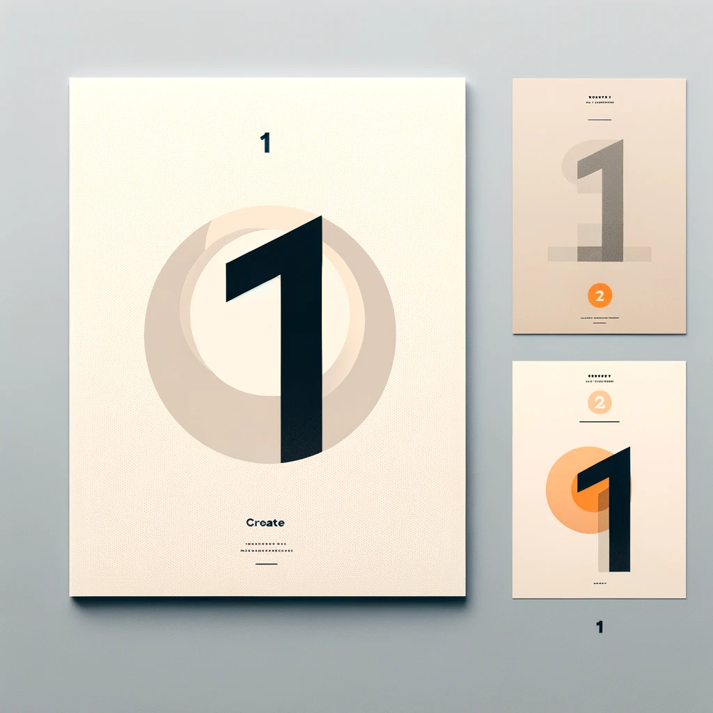
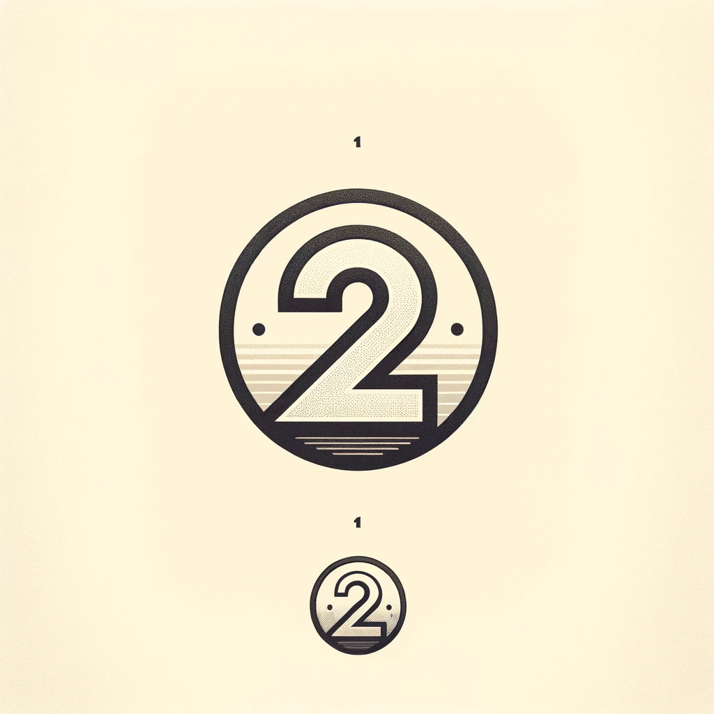
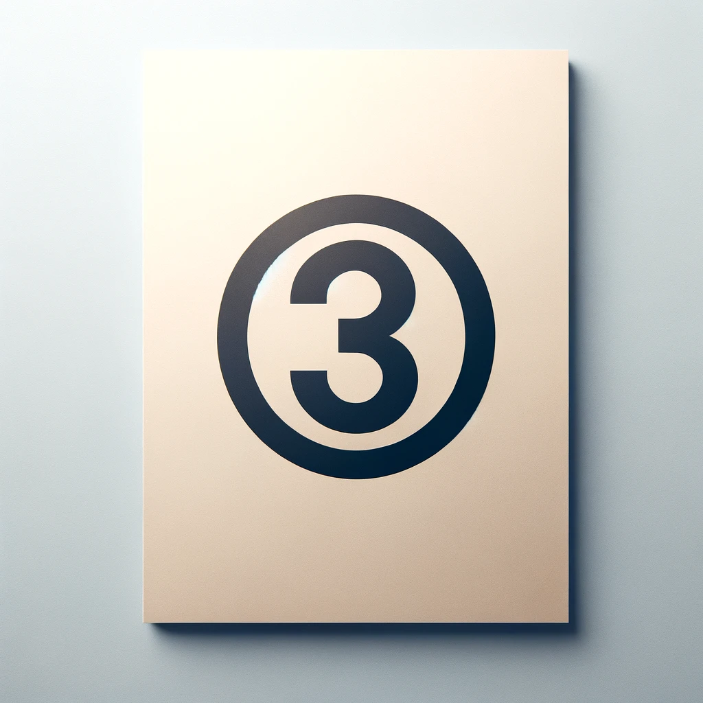
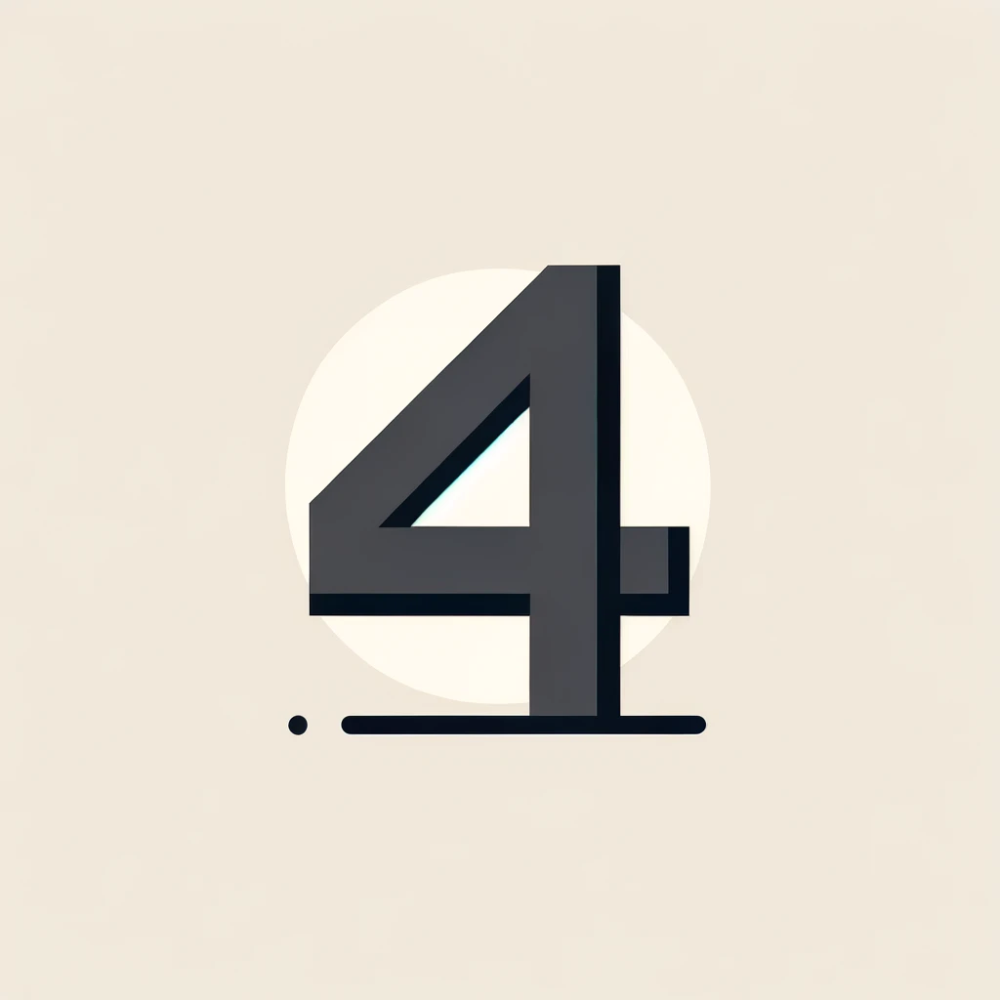
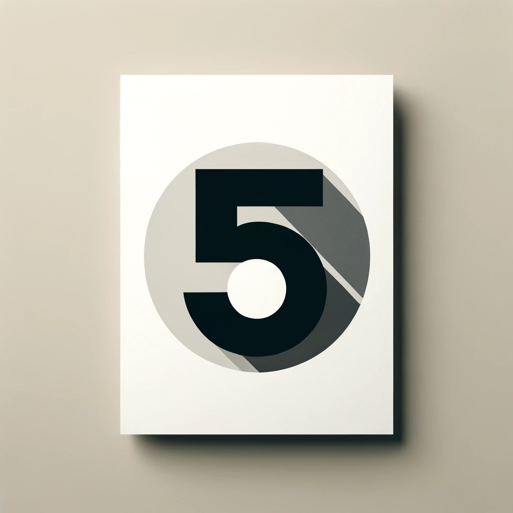
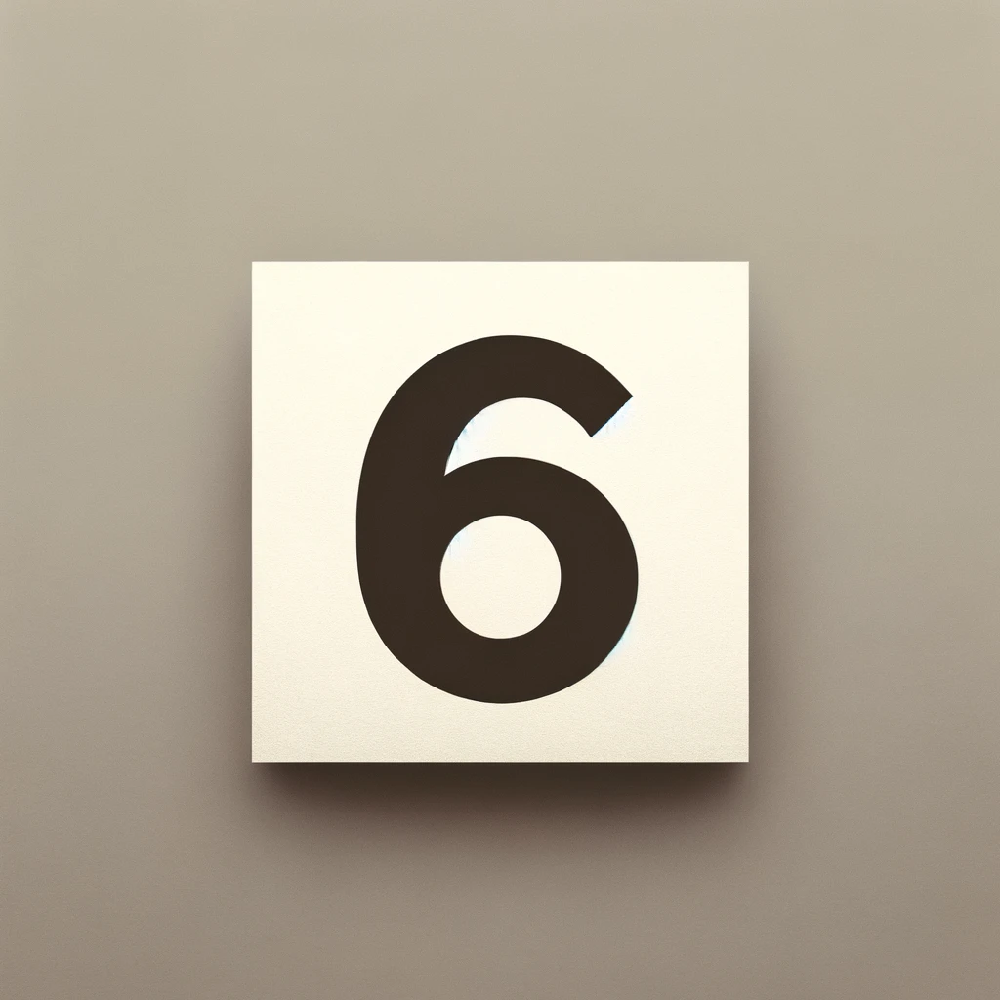
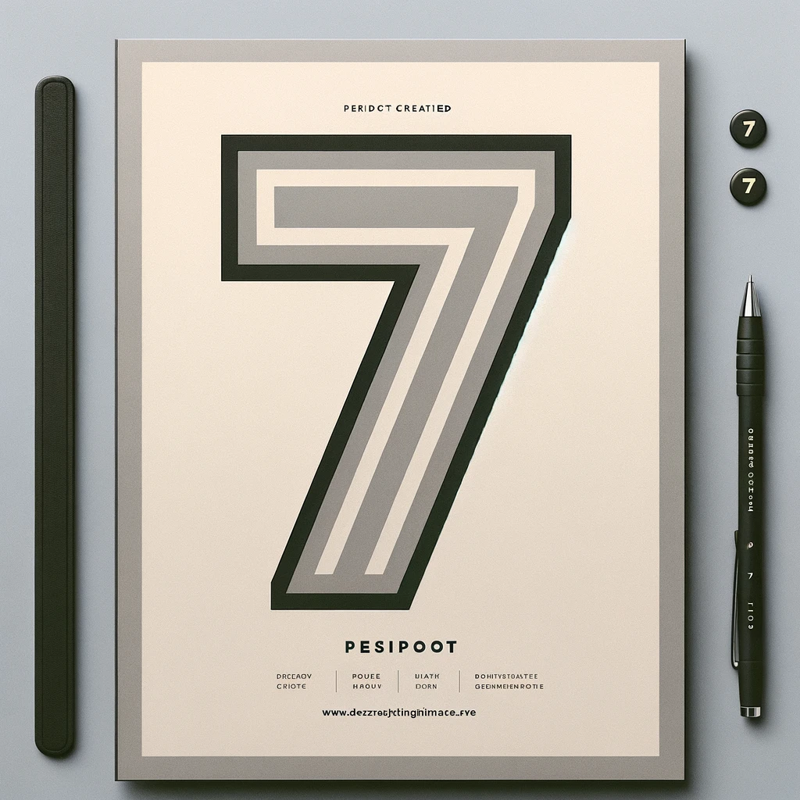
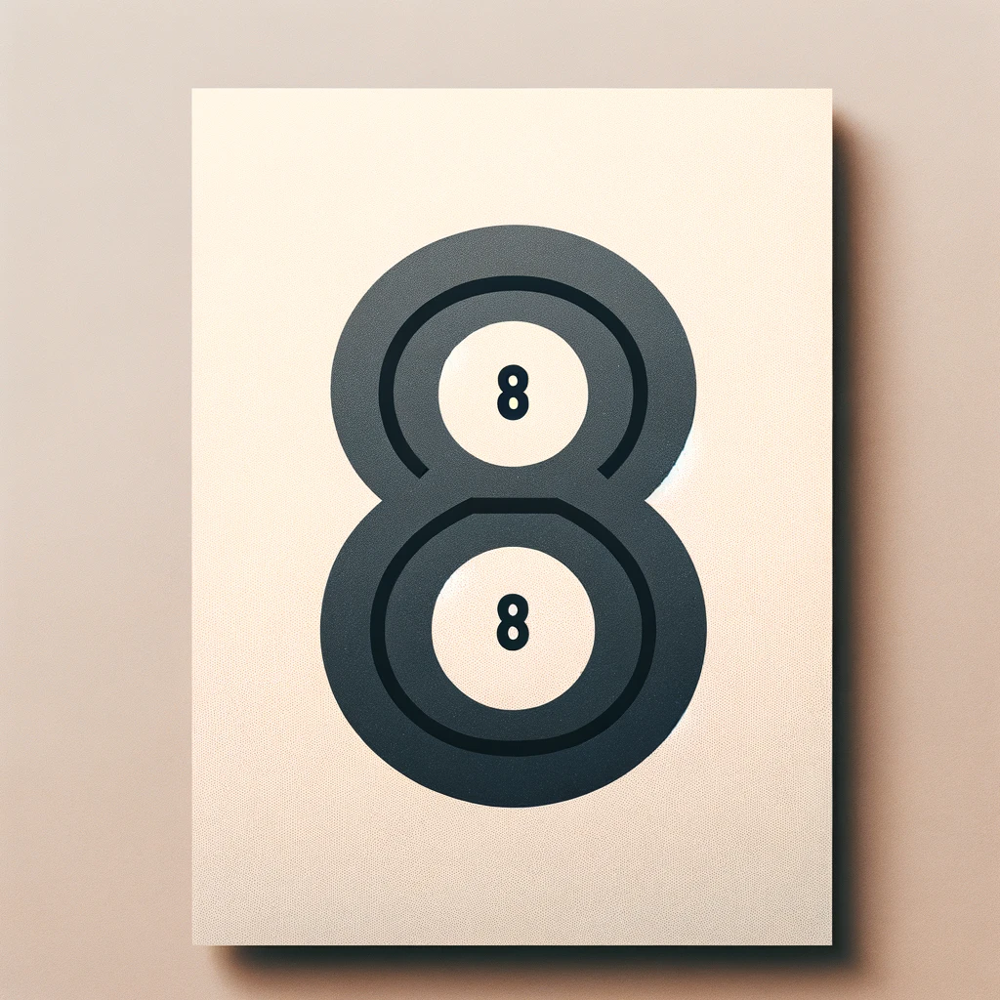
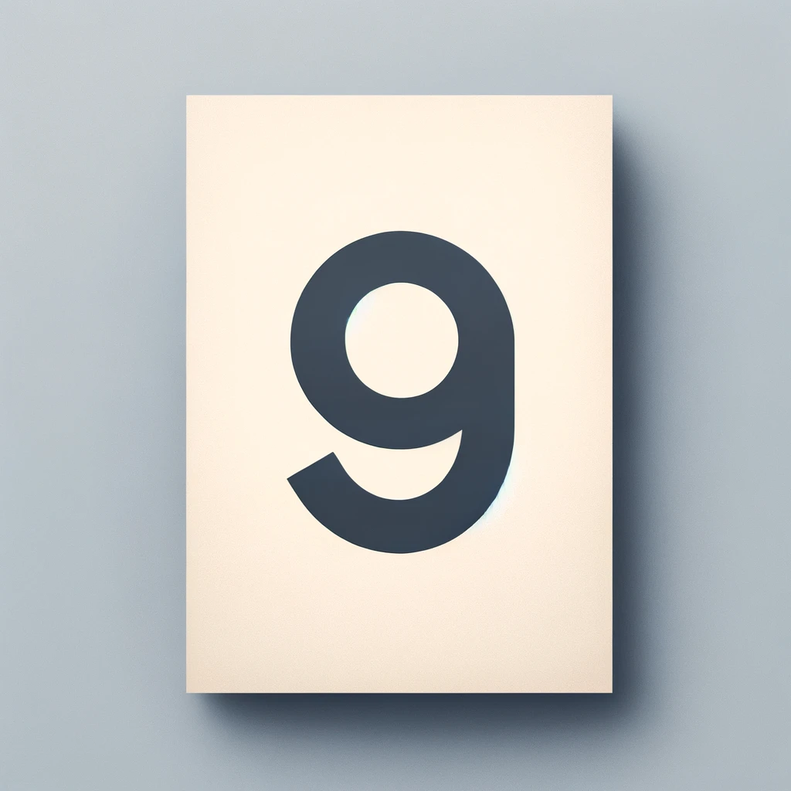
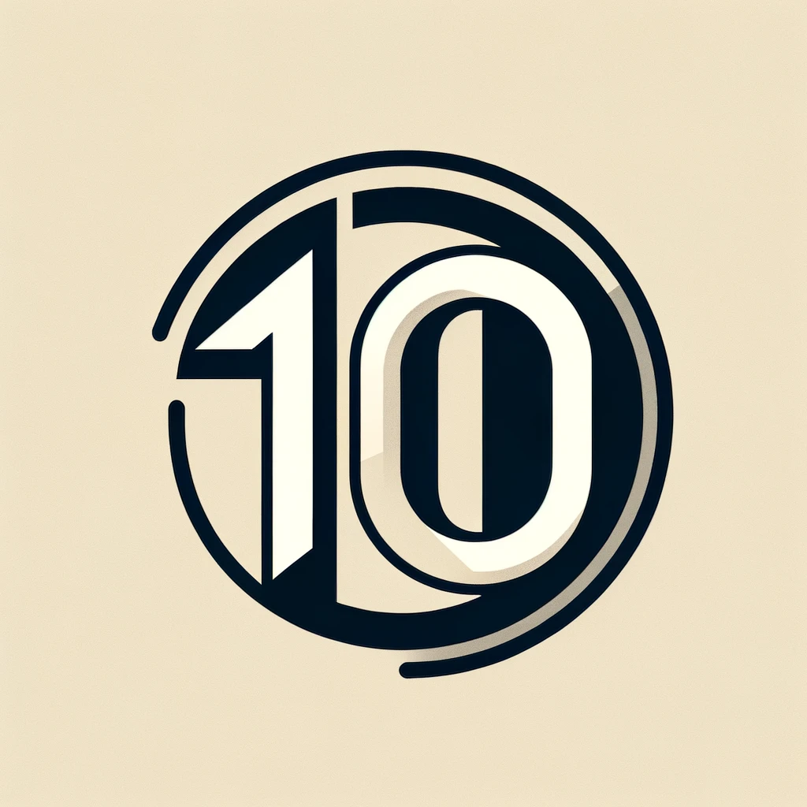

Faq
What services do you offer?

I offer a wide range of services related to application development and web design. My portfolio includes web and mobile application designs, as well as graphic designs and user interfaces. Additionally, there is a blog on my website where I share my life, passions and experience related to studies.
What is the process of working with you?

The cooperation process begins with the first contact, followed by the signing of the contract. Then we define the scope of work and conduct a conversation to agree on the details of the project. Thanks to this, the process is transparent and tailored to the individual needs of the client.
What technologies do you specialize in?

I specialize in creating applications using technologies such as React, JavaScript, CSS, HTML, PHP, Laravel, as well as in working with MySQL (Oracle) databases and the GitHub code management tool.
What is the pricing of your services?

Prices for my services are determined individually, depending on the scope and complexity of the project. I always strive to ensure that my services are competitive and tailored to the client's budget.
How long does a typical project take to complete?

The project implementation time depends on its scope and requirements. Each project is different, so the completion date is agreed individually with the client.
Do you offer support after the project is completed?

Yes, I offer a guarantee of a well-executed project and support after its completion. I make sure that my clients are fully satisfied with the final product.
What are your main working principles or design philosophy?

My design philosophy is based on creating solutions that not only look aesthetic, but are, above all, functional and tailored to the needs of users. I believe that good design combines clarity, usability and innovation.
What information do you need from the client to get started?

What information do you need from the client to get started? To get started, I need an initial design brief from the client that includes the project goal, target audience, style and functionality preferences, as well as any other information that may be relevant to the project.
Additional questions to get to know you better:

What are your favorite projects in your portfolio and why? My favorite projects are those that challenged me and allowed me to develop new skills. I value projects in which I could experiment with new technologies and solutions, which brought satisfaction to both me and my clients.
What hobbies or interests do you have outside of design and programming?

What hobbies or interests do you have outside of design and programming? My passions outside the IT world are acting on the Internet. When I was a kid, I ran a YouTube channel, recording games on it. I am active on Instagram and Tiktok. I have many interests.